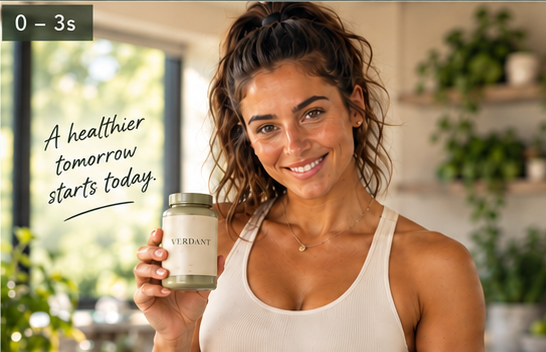
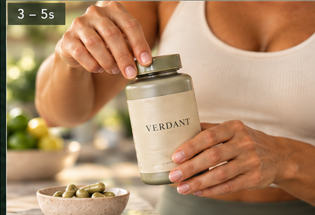
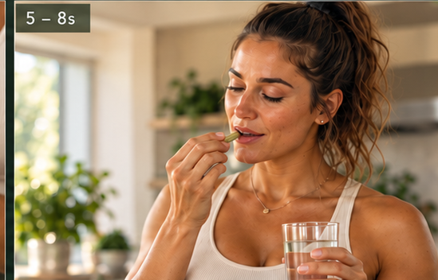
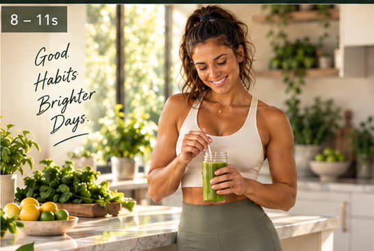

A brighter start to the day.
LUMEN+ is presented through Ava as the campaign spokesperson: personal, direct and lifestyle-led rather than clinical.
The commercial moves from a warm morning kitchen into an active outdoor moment, keeping the product and the ritual at the centre of the story.
Ritual → product → movement.
Supporting references establish Ava, wardrobe, product interaction and the campaign's morning wellness language.





Wellness made personal.
Ava is the voice of the campaign, giving the supplement a human routine rather than a detached product-demo feel.
Direct address
Ava speaks to camera so the commercial feels like a personal recommendation.
Ritual language
Morning preparation and product handling make the proposition easy to understand visually.
Energy shift
The visual rhythm moves from calm preparation to an active lifestyle finish.
Built as a compact advertising system.
AI as a visual production partner.
The case study documents the creative workflow and visual direction. Exact model/tool attribution should be confirmed before publication rather than inferred from the finished asset.
Making a supplement feel like a lifestyle.
LUMEN+ demonstrates a repeatable Hero Ava format: spokesperson, product interaction, lifestyle action and a clean product-led close.
The same structure can extend across wellness, beauty and consumer-product campaigns.